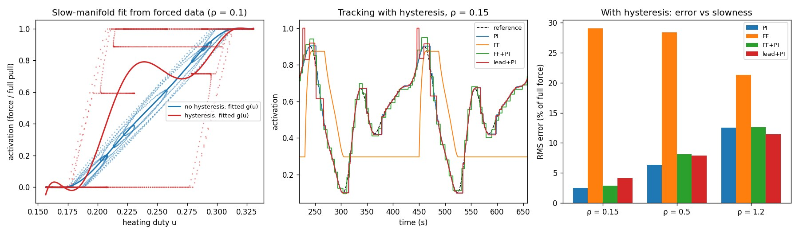
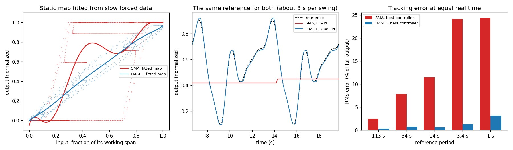

We have a muscle design in simulation, and a new paper about controlling muscles. Ours is a "matrix muscle": an array of small shape-memory-alloy (SMA) wire cells, where cells side by side add force, cells end to end add stroke, and a controller decides which ones fire. The paper is Bettini, Kazemipour, Katzschmann and Haller, Nonlinear spectral modeling and control of soft-robotic muscles from data (Nature Communications, 2026). It looked close to what we were doing, so we tried its method on our cell. It didn't help. Then we modelled the paper's own kind of cell and tried again, and it did.
The reason is one ratio: how fast the muscle is, against how fast the feedback loop can see it. Everything here is simulation. Nothing has been built, and the second cell's numbers are assumptions we name below.
The paper's recipe
The hardware is an elbow driven by two HASEL muscles. A HASEL is a row of oil-filled plastic pouches with electrodes on part of each one. Several kilovolts pull the electrodes together, the oil is squeezed into the rest of the pouch, and the pouch shortens. Theirs has 15 pouches in series and runs up to 8 kV.
The method assumes the muscle settles much faster than you ask it to move. If that holds, the output is just a fixed curve of the input.
- record a few trajectories under normal, slowly varying input
- fit the curve as a polynomial
- look up the inverse of that curve as feed-forward, and add a small PI feedback loop
On their rig, PI alone tracked with 7.6° RMS error, feed-forward alone with 3.6°, and the two together with 2.4°. They measure "slowly" with a number ρ: how fast the reference changes, over how fast the muscle settles. Their test ran at ρ = 0.15.
01 / On our SMA cell, it adds nothing
An SMA wire is a thermal actuator. Current heats it, it contracts, and it relaxes as it cools. Our cell is modelled from a real wire's datasheet (Dynalloy Flexinol, 150 µm), with a cooling time constant of 2.7 s. It also contracts and relaxes at different temperatures, so the same heating power can leave it at different forces depending on where it came from.
Slow, for this cell, is very slow. The paper's ρ = 0.15 means a reference that takes 113 s per cycle.
And the fixed curve doesn't exist. We fitted one anyway, the paper's way. Tracking error, as a percentage of full force, at ρ = 0.15:
| Temperature gap between contracting and relaxing | PI | feed-forward | feed-forward + PI |
|---|---|---|---|
| none | 0.19 | 3.1 | 0.24 |
| ±2 °C | 0.41 | 9.4 | 0.45 |
| ±10 °C (our estimate for this wire) | 2.49 | 29.0 | 2.91 |
Feed-forward alone is 29% wrong, and adding it to PI never improves on PI. Plain feedback does the job.

02 / Building the paper's cell
So we modelled a HASEL pouch. The paper and its supplement give the pouch equations: how the zipped length, the bulge angle and the stroke relate, and the force from the change in capacitance. We implemented them and checked the closed-form force against the numerical derivative of the capacitance; they agree.
What the paper doesn't give is numbers. The film material, the pouch count and the voltage are theirs. Every dimension is ours, picked as typical of published HASELs: 18 µm film, a 20 × 50 mm pouch, electrodes over half of it. So is every dynamic number: a 50 ms time constant, and a small hysteresis.
Then we sized both cells for the same job, 10 N at 10 mm of stroke:
| SMA | HASEL | |
|---|---|---|
| Cells | 7 × 5 wires | 2 × 15 pouches |
| Active length | 250 mm | 300 mm |
| Drive | 0.41 A, low voltage | 8 kV, almost no current |
| Time constant | 2.7 s | 50 ms (assumed) |
| Power to hold | 11.8 W | about 0 (leakage not modelled) |
| Energy per stroke | 11.8 J | 0.39 J at most |
The SMA cell pays to hold: cut the current and it lets go. That cost shaped our whole design, down to rotating which cells carry the load so none stays hot. The HASEL is a capacitor, so holding is nearly free.
03 / On the HASEL cell, the paper's result comes back
Same test, same assumed feedback path, ρ = 0.15. Tracking error, % of full output:
| PI | feed-forward | feed-forward + PI | |
|---|---|---|---|
| SMA | 2.5 | 29.0 | 2.9 |
| HASEL | 4.5 | 6.0 | 3.2 |
On the HASEL, the combination beats either part, which is the paper's ordering. The margin is smaller than theirs: PI alone is 1.4× worse than the combination here, and 3.2× worse on their rig. Their rig has voltage slew limits and clutch switching that our model doesn't.
Given the same reference in real seconds, the two cells aren't close. Best controller for each:
| Reference period | SMA | HASEL |
|---|---|---|
| 113 s | 2.5% | 0.3% |
| 14 s | 11.5% | 0.7% |
| 3.4 s | 24% | 1.3% |
| 1 s | 24% | 3.2% |
At 3.4 s and faster, the SMA cell's output doesn't move at all. Its temperature swings inside the gap between contracting and relaxing, and 24% is the error of holding still.

04 / Why it works on one and not the other
We varied the two numbers we had assumed, the HASEL's time constant and the delay in the feedback path:
| Muscle time constant | Feedback delay | PI | feed-forward + PI |
|---|---|---|---|
| HASEL, 20 ms | 100 ms | 14.8 | 5.1 |
| HASEL, 50 ms | 100 ms | 4.5 | 3.2 |
| HASEL, 50 ms | 10 ms | 1.45 | 1.47 |
| SMA, 2.7 s | 100 ms | 2.5 | 2.9 |
Feed-forward earns its place when the muscle is faster than the loop watching it. A loop that sees the output late has to keep its gain low, so something else has to carry the motion, and the fitted curve does. Shorten the delay and feedback catches up; the curve stops mattering. The SMA cell is 27 times slower than the delay, so feedback always had time.
The paper's result is about fast muscles on a comparatively slow loop. It says so in its own terms: the method is for muscles whose transients are fast next to the motion, and it names SMA as a candidate only if that is verified. For our wire, it isn't.
What this means for the muscle design
- The paper doesn't touch our hard problem. It drives its muscle with one number. Ours has one input per cell, and choosing which cells fire is the design. The authors list independent inputs as future work.
- An SMA cell needs a model with memory. Its output depends on its temperature and on which way it got there. A fixed curve can't carry that, so per-cell control needs a thermal state for each cell, or a measurement of each cell.
- A HASEL cell would remove the reasons for half our controller. No holding cost and no heat leaking between neighbours means no need to rotate the load. What it adds is 8 kV drive electronics and breakdown as a failure mode.
What isn't done
The HASEL result rests on assumed numbers. The table above shows that the time constant and the delay decide the answer, and both are guesses. The paper's measured data is public; fitting our model to it is the next step. There is no dielectric breakdown or leakage in the model, and 8 kV across two 18 µm films is 222 V/µm. The SMA's temperature gap is our estimate, not a datasheet figure. Only a single muscle unit was tested for each cell, not an array. And none of it has touched hardware: these are predictions, marked as such until a measurement replaces them.
Who did what
We had the matrix-muscle idea, found the paper, and asked whether a version based on it would beat what we had. Claude read the paper and its supplement, implemented the recipe, built the HASEL model from the paper's equations, and ran the comparison. It also flagged, while building the test, that a first-order plant with a perfect sensor makes PI win trivially, and added the noise and delay that make the comparison mean something.
Everything is open in punkfab/robot-actuators, under muscle/. Choosing between actuator technologies for an assembly, and want the choice tested in simulation before anything is ordered? Start a project →